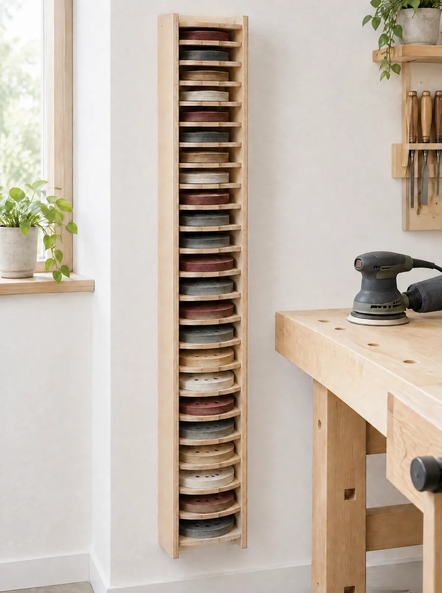
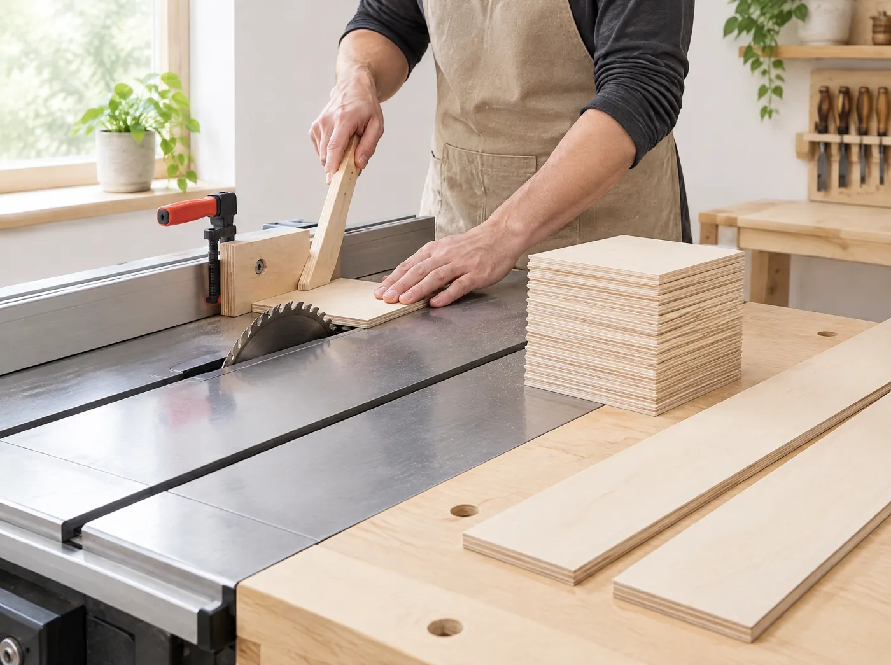
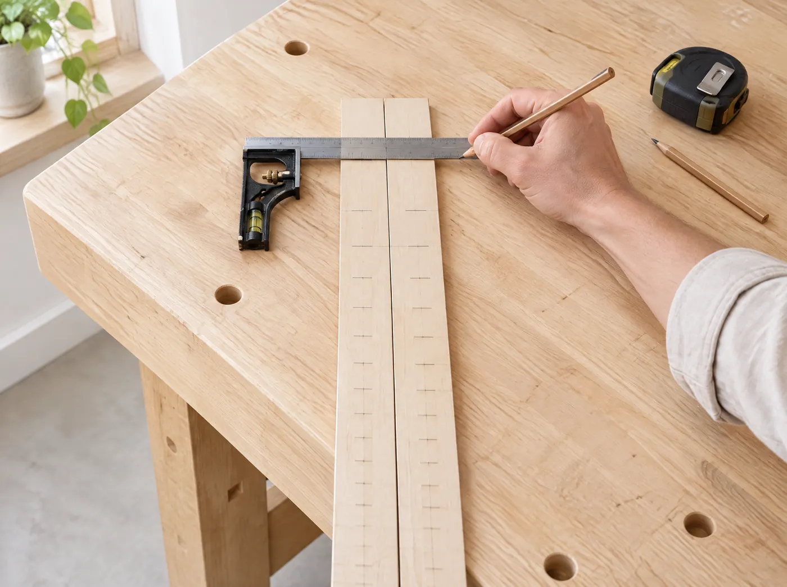
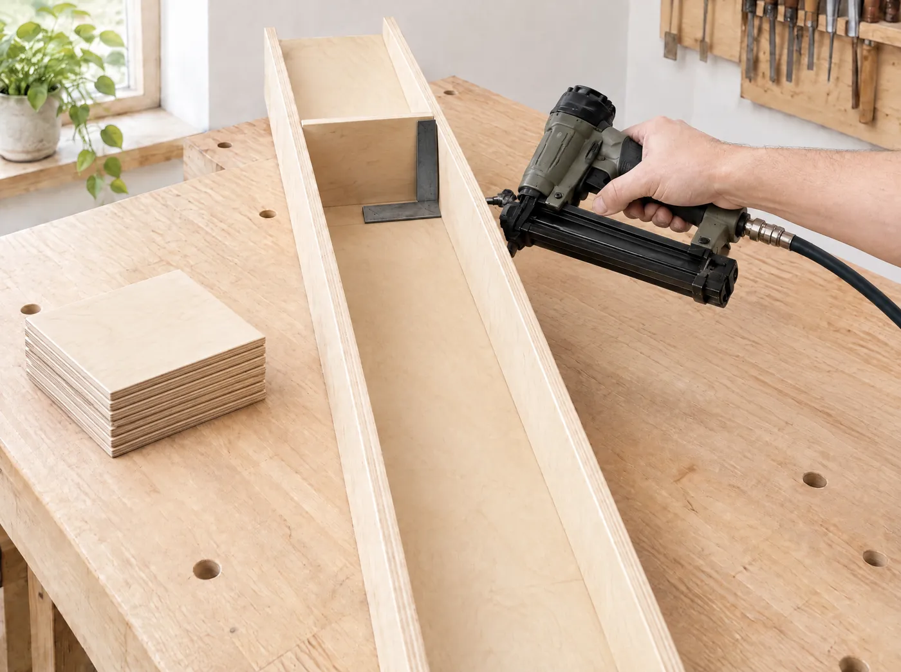
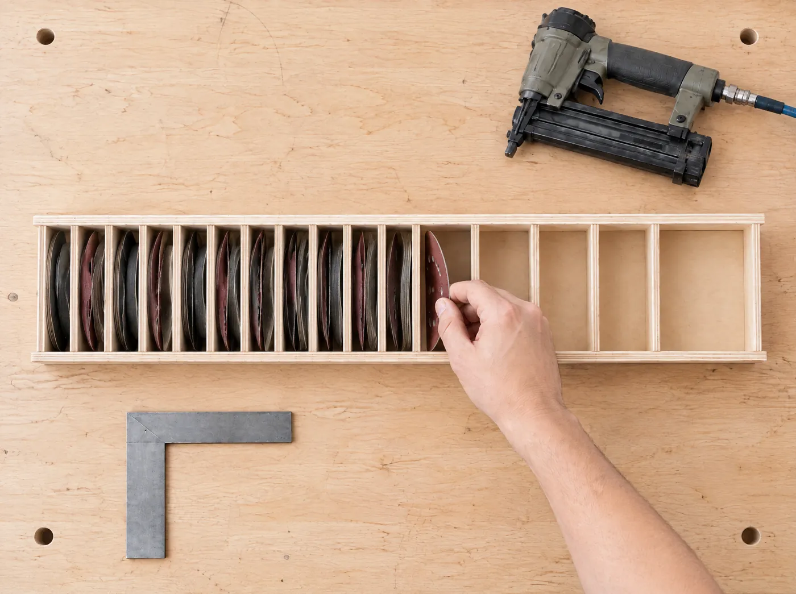
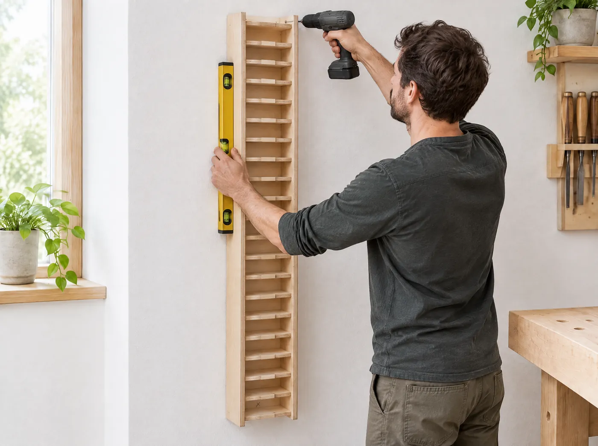
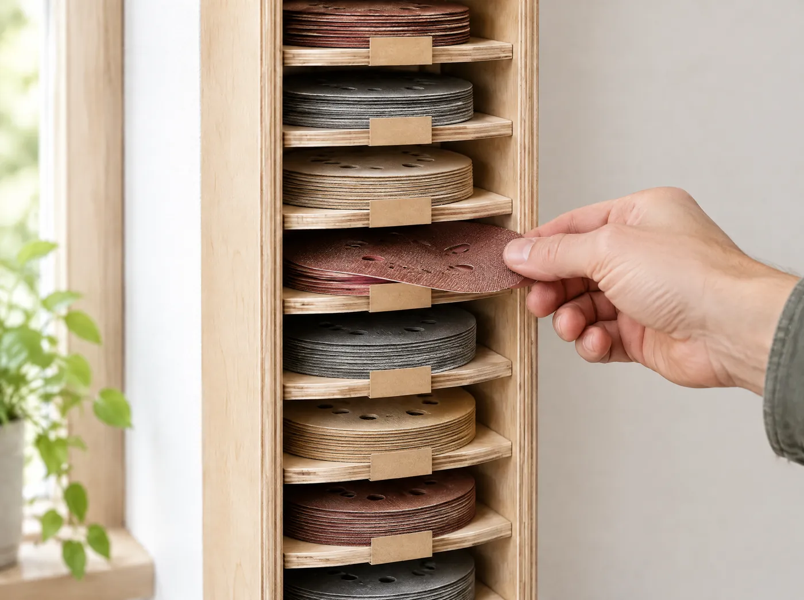

Zakladač na brúsne kotúče
Úzky stojan z 6 mm preglejky, ktorý na 17 cm šírky odloží 20 druhov brúsnych kotúčov. Každá zrnitosť má svoj priečinok, takže správny kotúč vytiahneš jednou rukou.
- Rozmer
- 17 × 15 × 120 cm
- Priečinky
- 20 (Ø125 a Ø150 mm)
- Čas
- cca 4 hodiny
- Náročnosť
- stredná

Úzky na šírku, veľký kapacitou
Namiesto dvoch širokých stĺpcov ide všetko nad seba. Vznikne iba 17 cm široký kus nábytku, ktorý sa zmestí aj do medzery vedľa pracovného stola.
Hore je desať priečinkov pre kotúče Ø125 mm, dole rovnakých desať pre Ø150 mm. Výšky otvorov sú v oboch sériách rovnaké.
- Hrubé zrnitosti P40 až P80 sa míňajú najrýchlejšie, preto majú najvyššie priečinky.
- Jemné zrná postupne menej, P400 stačia 4 cm.
- Zrnitosť je napísaná na bočnici, takže ju vidíš bez prehrabávania.
- Kotúč vytiahneš jednou rukou, nič neohýbaš.
Výška otvorov
| Zrnitosť | Použitie | Čistá výška |
|---|---|---|
| P40 | hrubé brúsenie | 7,0 cm |
| P60 | hrubé brúsenie | 7,0 cm |
| P80 | vyrovnanie | 6,5 cm |
| P100 | vyrovnanie | 5,6 cm |
| P120 | príprava | 5,2 cm |
| P150 | príprava | 5,0 cm |
| P180 | jemné | 4,7 cm |
| P240 | jemné | 4,4 cm |
| P320 | medzivrstvy | 4,3 cm |
| P400 | medzivrstvy | 4,0 cm |
| Jedna séria (10 otvorov) | 53,7 cm | |
2 × 53,7 cm otvory + 21 políc × 0,6 cm = 107,4 + 12,6 = 120,0 cm
Materiál a náradie
Odškrtávaj, čo už máš pripravené. Stav si zapamätá tento prehliadač.
Rezací plán (preglejka 6 mm)
Spojovací materiál
Bez lepidla. Nástrelovací spoj drží hneď a netreba čakať.
Náradie
Postup v 6 krokoch
Kroky nadväzujú. Najviac času ušetríš presným rezaním a rozmeraním na začiatku.
-

1 z 6Narež všetky diely pri jednom nastavení
Najprv priprav dve bočnice 120 × 15 cm a zadnú stenu 120 × 17 cm. Potom sériovo narež 21 políc 15,8 × 15 cm. Doraz na píle nastav iba raz a už ho nemeň.
Finta z dielnePo prvom presnom kuse už nemeraj každú policu nanovo. Použi doraz alebo prvý diel ako šablónu a odstrániš väčšinu chýb, ktoré by sa pri 21 kusoch sčítali.
-

2 z 6Vyznač všetkých 20 úrovní ešte pred montážou
Obe bočnice polož vedľa seba, zarovnaj horné hrany a čiary prenášaj cez uholník jedným ťahom. Začni zhora pri P40 podľa tabuľky výšok. Rovnaké úrovne potom prenes aj na zadnú stenu.
- Hodnota v tabuľke je čistá výška otvoru.
- Po každom otvore pripočítaj 6 mm na policu.
- Desať úrovní zopakuj druhýkrát pre Ø150 mm.
-

3 z 6Prvú policu založ presne na čiaru a v pravom uhle
Najprv k zadnej stene pribi z boku obe bočnice, vznikne dlhý úzky rám. Rám polož na chrbát. Prvú policu postav na hranu na vyznačenú úroveň, pritlač ju uholníkom a až potom zaisti. Hlava klincovačky musí byť presne v rovine police, aby klinec prešiel cez bočnicu do jej hrany. Rovnako zozadu cez zadnú stenu.
Prvý kus rozhodujeO tom, ako rovno pôjde celý 120 cm vysoký stojan, rozhoduje prvá polica. Daj si na nej záležať.
Pozor na 6 mm preglejkuNastreľuj kolmo a s citom. Najprv si prstom over, kde je hrana police, a až potom prilož klincovačku.
-

4 z 6Pokračuj podľa značiek a skúšaj kotúčom
Ďalšie police montuj rovnakým spôsobom. Každú polož na čiaru, skontroluj 90° a zaisti klincami z boku aj zozadu.
- Rozstupy už nemeraj nanovo, drž sa značiek z kroku 2.
- Malá odchýlka sa na 120 cm výšky násobí. Oprav ju hneď.
- Vnútri je 15,8 cm, kotúč má 15 cm. Ostáva asi 8 mm vôle.
Nečakaj až na koniecPo troch až štyroch priečinkoch vlož skutočný kotúč Ø150 mm. Ak ide dnu a von bez drhnutia, pokračuj.
-

5 z 6Vyrovnaj stojan a ukotvi ho hore aj dole
Stojan je vysoký 120 cm, ale široký iba 17 cm. Pred naplnením ho preto nenechávaj voľne stáť. Prilož ho k stene, vodováhou skontroluj zvislosť a upevni ho v hornej aj dolnej časti.
- Horný bod drží stojan pri stene.
- Dolný bod zastaví kývanie pri vyberaní kotúčov.
- Do dreva vrut, do muriva alebo sadrokartónu kotvu pre daný materiál.
NepreťahujPod hlavu skrutky daj podložku. Tenká zadná stena sa inak ľahko zdeformuje.
-

6 z 6Označ priečinky a naplň ich
Hornú desiatku použi pre Ø125 mm, dolnú pre Ø150 mm. V oboch drž rovnaké poradie od hrubého po jemné: P40 → P400. Po správnom kotúči potom siahneš bez hľadania.
- Jedna zrnitosť, jeden priečinok. P80 a P100 nemiešaj.
- Zrnitosť napíš fixom priamo na čelo bočnice vedľa priečinka. Nálepka by sa pri vyberaní kotúčov pokrčila a odlepila.
- Neprepĺňaj. Kotúč musí ísť von bez ohýbania.
Hotovo. Posledná kontrola
Prejdi všetkých 20 priečinkov, do každého vlož a vytiahni jeden kotúč. Ak nič nedrhne, stojan je pripravený na každodennú prácu.
 Ďalší návodPolička na kľúče pri dverách
Ďalší návodPolička na kľúče pri dverách